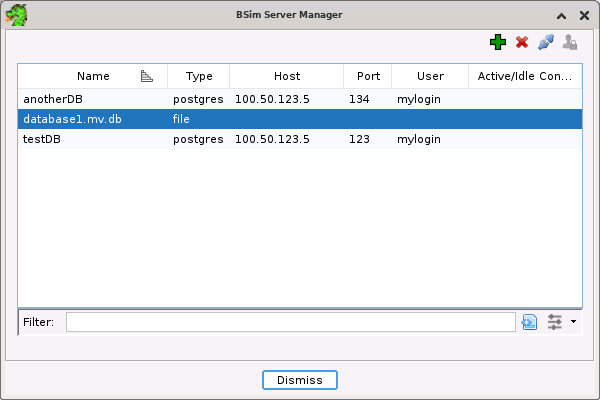

The BSim Search features allows the user to perform similar function searches against an existing BSim database. See the BSim Overview for a full description of BSim. This section describes the actions and related GUIs for conducting either an overview search or a similar functions search and the follow on actions that can be performed on the search results.
The BSim Database feature comes with an Ghidra GUI interface for initiating searches. This
GUI integrates with Ghidra via a plug-in that can be added to the main Ghidra Code Browser
tool. This plug-in is currently called the BSimSearchPlugin within Ghidra and can be
enabled from within the Configure Toolmenu. If the plug-in is enabled, the Code Browser
will contain a BSim menu with actions for managing BSim database definitions, performing an
overview query, or perfrorming a similar functions search. Also, the will appear in the toolbar, which is a shortcut for
search similar fuctions action.
Before a BSim overview or search can be performed, one or more BSim database specifications must be defined. BSim database specifications are managed by the BSim Server Manager dialog.
The server dialog can be invoked either from main toolbar, BSim
Manage Servers, or using the
button in either the BSim Overview or BSim Search dialogs.

The dialog displays a table showing all the currently defined BSim databases/servers. Each entry shows a name for the BSim database, its type (postgres, elastic, or file), a host ip and port (if applicable), and finally the number of active connections.
There are three primary actions for this dialog:
Add a new database/server definition - a Define Server Dialog will be shown.
Delete a database/server definition - The selected entry will be deleted.
Change password - A change password dialog will appear for the selected entry
Defining a new BSim server/database
Pressing the
Choose the type of BSim database first as that will affect the type of information that needs to be specified. For postgres and elastic, you need to enter host and port. For file, you see a button for using a filechooser to pick the file that is the local BSim H2 database.
The BSim Overview action does a search against all functions in the current program, but instead of returning all the specific results for each function, it returns a count of the matching results for each function.
To invoke an overview search dialog, select BSim Overview...
Overview...

To start the overview task, select a predefined BSim database server from the combo box or
press the button to bring up the Manage BSim Servers dialog. Then adjust the similarity and
confidence settings as desired, and press the Overview button. See the settings for the Similar Functions Search for more information about similarity and
confidence values.
After performing a BSim Overview Query, the BSim Function Overview window will appear.

The table displays an entry for each function that had at least one hit. Each entry displays the address of the function, its name, the number of hits BSim found and the self significance of the function
The action pops up a dialog displaying the search
criteria used to generate this overview results set.
The action controls whether or not
single clicking in the table will navigate the listing to the selected function. Even if the
action is off, navigate will still occur on a double-click.
The action will create a selection in the
listing for the selected row(s).
There are also several pop-up actions that work on the selected rows.
- Search Selected Functions Performs a BSim Similar Functions Search on the selected functions in the Overview Results table.
- Search Selected Functions... Shows the BSim Search Dialog populated with the selected functions in the Overview Results table.
- Make Selection Selects functions in the listing based on the selected rows in the Overview results table.
When trying to use the Executable Match Summary to determine if there is a significant match between the currently active program and executables in the database, there are two potential sources of noise in the resulting scores. Very small functions can produce false positives which artificially increase the confidence score for a particular executable. Also, some functions, like those provided by standard language libraries, may be used by a large portion of the executables in the corpus, and incorporating their matches into confidence scores obscures more significant matches. In both cases, the functions have an overly large number of matches in the database. This table, preferably sorted on the Hit Count column, serves as an overview of what, within the context of the active program, are the most common and least common functions in the database. This makes it easy to filter out precisely these kinds of problem functions.
The standard procedure is to select an upper-bound for a function's Hit Count, select every row in the table below that threshold, and then transfer that selection to the main Code Browser window by clicking on the Make a selection icon in the upper right corner of the table. Then, with selection active, invoke the Search Similar Functions.
The BSim Similar Function Search action performs a BSim search against one or more functions in the current program. If there is a selection, it will search all functions in the selection; otherwise it will search on the one function containing the cursor (If the cursor is not in the body of any function, an error dialog will appear).
To invoke an overview search dialog, select BSim Search Functions... or press the
Search Functions... or press the button in the main toolbar.

This dialog allows you to configure the BSim search. The fields are as follows:
Standard Fields
- BSim Server - Choose a BSim database/sever from the drop down list or define a new one using the
- Function(s) - Shows the function to be searched or the number of functions being searched. Press the
button to see a list of all the selected functions.
- Similarity Threshold - This is a score between 0.0 and 1.0 indicating as a percentage how similar two functions are to each other and is calculated as a Cosine Similarity on their feature sets. For two functions that are about the same size, a similarity score of 0.85 indicates that they share about 85% of their features. The score takes into account the relative importance of individual features and will vary from a raw feature percentage.
- Confidence Threshold - Enter a minimum confidence threshold for matches. Confidence is an unbounded score that indicates how likely it is for a given pair of functions to be a causal match. Formally, confidence is a log likelihood ratio that accumulates positive scores for features in common and negative scores for differences. The larger the score, the more significant the result.
- Max Matches Per Function - Enter the maximum number of results to return for any one function
Filters
Filters allow the search to be further restricted by allowing the user to choose from a list of predefined filter criteria and then specify a value for that critera. Supported filters include:<\P>
- Executable Name - specify one or more executable names. Only functions from executables with those names will be included.
- MD5 - specify a 32 Hex digit MD5 string. Only functions from executables with that MD5 will be included.
- Architecture - Specify one or more Ghidra architecture specifications. Only functions from that type of executable will be included.
- Compiler - Specify one or more Ghidra compiler specifications. Only functions with those compiler specifications will be included
- Path Starts With - Specify one or more path strings. Only functions from executables with names that start with that path are included.
- Calls - Specify one or function names. Only functions that calls functions with those names will be included.
- Ingest Date Earlier - specify a date. Only executables that were ingested into Ghidra prior to that date are included.
- Ingest Date Later - specify a date. Only executables that were ingested into Ghidra after that date are included.
- Function tagged as <TAG> - if true, only include functions that were tagged with <TAG> where <TAG> is some predefined function tag string. If false, only include functions that don't have that tag association.
Most of these filters also have NOT versions where only functions that don't match the criteria are included in the results.
Once all the fields have valid values, press the Search button to initiate the BSim Function search.
 A BSim search can also be initiated from
either the listing or decompiler by right-clicking to bring up the popup menu and selecting
either BSim
A BSim search can also be initiated from
either the listing or decompiler by right-clicking to bring up the popup menu and selecting
either BSim Search Function(s) or
BSim
Search Function(s) or
BSim Search Function(s)... The only
difference is whether or not to bring up the BSim Search Dialog before performing the search.
Once one search has been done, subsequent searches can be done using the same settings as the
previous search without bringing up the dialog.
Search Function(s)... The only
difference is whether or not to bring up the BSim Search Dialog before performing the search.
Once one search has been done, subsequent searches can be done using the same settings as the
previous search without bringing up the dialog.
When this action is invoked from the listing, it will apply the function containing the cursors, unless there is a selection, in which case it applies to all functions in the selection. When the action is invoked from the decompiler, it will apply to the function whose name is directly under the cursor.
After initiating a BSim Similar functions search, a BSim Search Results Window will appear.

There are two panels associated with each result set. The top panel is the Function Matches
table and the bottom table is the Executables Summary Table. The Executables Summary Table can
be hidden using the tool bar button. Each row will
show columns pertaining to the particular match including, the name of the original function
queried, the name of the matching function, and the corresponding similarity score. If a single
function produces more than one match, each match will produce a separate row. Clicking on the
column headers will sort the results on that column, and clicking on individual rows will
navigate in the Code Browser to the original function that produced that particular match.
Function Matches Panel
The Function Matches Panel displays one function match result per row. There can be multiple rows/matches for any queried function. Each row displays the name of the function being queried, the name of the matching function, its associated match scores, and other related information described below. Clicking on column headers will sort on that column and clicking on a row will navigate the tool to function being queried. The columns include (not all are visible by default):
- Status - This is the status result of attempting to apply names from a matching function to the queried function. Hover on the status to get a description of the apply status.
- Architecture - The standard Ghidra language ID specifying the processor/architecture of the matching function.
- Category - A user controlled field for labeling groups of executables.
- Compiler - The compiler used to build the matching function/executable.
- Confidence - The confidence score associated with the match.
- Exe Name - The name of the executable containing the matching function.
- Ingest Date - The date and time when the executable containing the matching function was ingested into the database.
- Location - The address of the function being queried.
- Matching Function Name - The name of the matching function.
- Md5 - The MD5 checksum of the executable containing the function match.
- Query Function Name - The name of the function being queried.
- Similarity - The similarity score associated with the match.
- Matches - The number of matches found for the source function.
- KNOWN_LIBRARY - Boolean value (check-box) indicating the function is a known statically linked library function, as labeled by the FunctionID (FID) analyzer.
- HAS_UNIMPLEMENTED - Boolean value (check-box) indicating the function contains instructions that weren't recognized by the decompiler.
- HAS_BADDATA - Boolean value (check-box) indicating that decompilation of the function was in error or incomplete.
Executable categories added to the specific database instance will also be available here as additional columns. See Executable Categories. The column name will match the formal category name, and the string values can be sorted like any other column. It is possible for multiple values to be assigned to the same category for a single executable. In this case, the results table will still display a single column, but the cell will display all the values as a sorted and comma-separated list. If a new date column is specifically added to the database, this will replace the existing column called 'Ingest Date'. In either case, this column will sort and filter as a proper date.
Each function tag registered with the BSim instance will produce an additional column available here. See Function Tags. The column will be labeled with the tag name, and the row entry will be a check-box, indicating whether the tag was present for that function or not.
Executable Match Summary
The Executable March Summary table displays a row for each executable that has at least one matching function for the queried function(s). Every function returned as a match is associated with its own executable. This table lists exactly one row for every executable associated with some function match, even if there is more than one such match. Many of the columns are the same as for the Function Match table, but there are two columns that show an aggregated value over all function matches that share that same executable.
- Confidence - For a query taken from functions in an unknown executable, the greater the number of function matches that come from a single executable, the more significant that executable is overall as a match to the unknown executable. The per executable confidence quantifies this by summing all the function match confidence scores into a single executable score.
- Function Count - A simple count of the number of function matches that share this same executable.
The executables with the highest aggregate confidence scores share the highest amount of functionality with the subset of functions in the active program that were queried. Users should be aware that this shared functionality is not necessarily the most important functionality. Small functions can produce false positive matches that artificially inflate a confidence score, and matches to library functions increase the score even though the shared functionality is not significant. Proper filtering of the queried subset and of the results may be crucial to getting a meaningful result. See The Overview Query.
Actions
Toolbar Actions
Search Info- Pops up a dialog displaying the search criteria used to generate this results set.
Hide/Show Executables Summary Table- Toggles the Executables Summary table on or off.
- >
Navigate on table selection- Toggles whether or not single clicking in the table will cause the tool to navigate. Double clicking will always navigate.
Popup Actions on Functions Table
- Apply Function Name - For each selected row, Ghidra will attempt to apply the name and namespace of the matching function to the queried function. If more than one match has been selected for the queried function, then nothing will be applied.
- Apply Function Signature - For each selected row, Ghidra will attempt to apply the name, namespace and skeleton signature of the matching function to the queried function. A skeleton signature is a signature where all non-primitive data types have been replaced with empty placeholder structures. This is safer than using all the data types which may not be appropriate for the target program as BSim finds matches against programs with differing architectures and compilers. If more than one match has been selected for the queried function, then nothing will be applied.
- Apply Function Signature and Data types - For each selected row, Ghidra will attempt to apply the name, namespace, signature,and referenced data types of the matching function to the queried function. This action should be used with caution as it could result in using many data types that are not appropriate for the target function, especially when applying signatures from different architectures and compilers. If more than one match has been selected for the queried function, then nothing will be applied.
- Clear Error Status - Clears any apply error statuses on the selected row(s).
- Compare Functions - The Function Comparison window will be displayed for the selected query and matching function.
Popup Actions on Executables Summary Table
- Filter on this Executable - This will cause a filter to be applied to the Function Matches table such that only matches from the selected Executable will be displayed.
- Load Executable - The selected program will be loaded and displayed in the active tool.
Comparing Functions
For an interesting function match, the user can invoke the CodeDiffPlugin in order to display the decompilation of the two matching functions side-by-side and highlight the differences between them. In order for this to happen, the tool needs to have access to the matching executable. The executable can be pulled in automatically if the Ghidra server corresponding to the BSim Database is running. Every executable record in the database has a URL field providing the host, repository, and path for retrieval. If the executable records were ingested from a Ghidra server using the standard tools, this field should be populated correctly.
The code comparison is triggered by right-clicking on a particular entry in the Function Match table and selecting Compare Function from the resulting pop-up. If the Ghidra server containing the executable is running, it will be loaded as a separate program directly into the current Code Browser and a comparison window will be displayed. If the Ghidra server is not running, or if the URL field is missing from the record, the comparison will still be triggered if the matching executable is loaded manually as a program in the same Code Browser. The menu action will identify the executable by name.
Loading Executables
An executable can be loaded into the Code Browser, without immediately triggering a function comparison, by right-clicking on a row in the Executables Summary table and selecting Load Executable from the corresponding pop-up menu.
Depending on the configuration of the database (See Security and Authentication), the user may need to authenticate themselves with the BSim server. This check will be performed immediately upon selected a server definition. If the server requires a password, a separate dialog will be brought up.
By default Ghidra will connect as the username reported by the OS, but in the password dialog, a different username can be entered if this doesn't match the account established on the server. The title bar of the main dialog indicates the username being used for the current connection.
If the BSim server requires PKI authentication, the user must register their certificate with the Ghidra client. This is accomplished from the main Project window by selecting Set PKI Certificate... from the Edit menu and pointing the dialog at the certificate file. The same certificate is used for authenticating with BSim and with a Ghidra server, if either require PKI. Ghidra will typically bring up a password dialog once per session to unlock the certificate at the first point it is required.